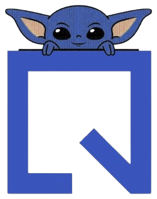

Configurações
As últimas 50 perguntas ficam salvas somente neste navegador.
Conte o que achou do YODA ou deixe uma sugestão para melhorá-lo.
Demonstração: o feedback ainda não é salvo nem enviado.
O formulário foi validado. Nesta versão de demonstração, a resposta não foi salva nem enviada.